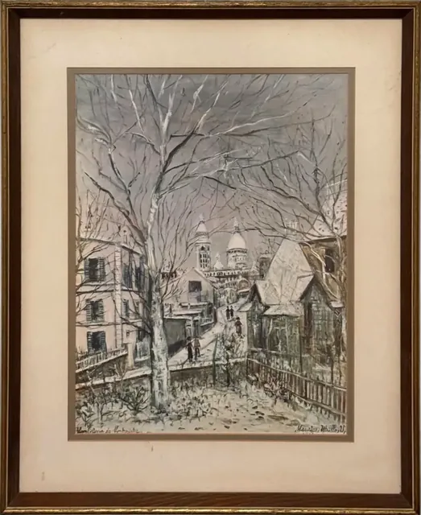
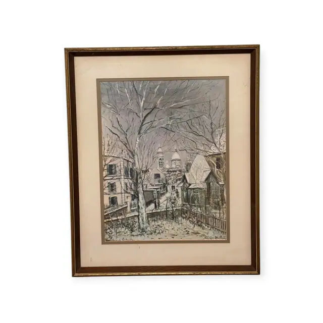
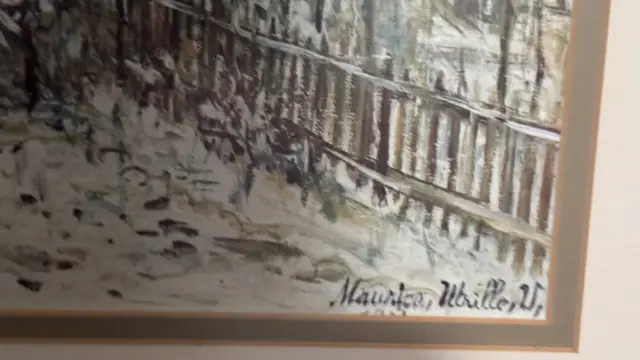
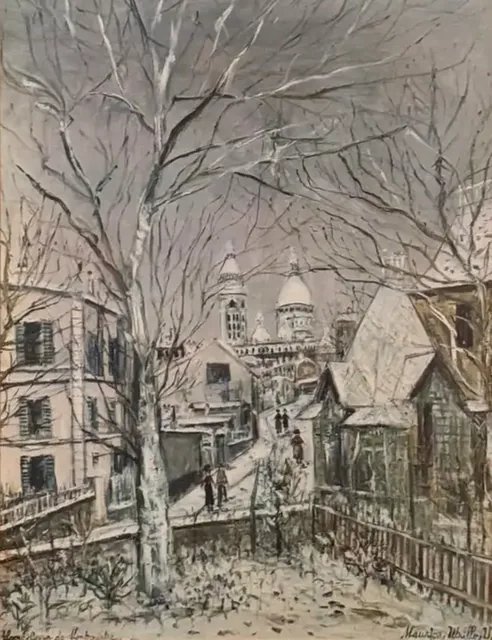
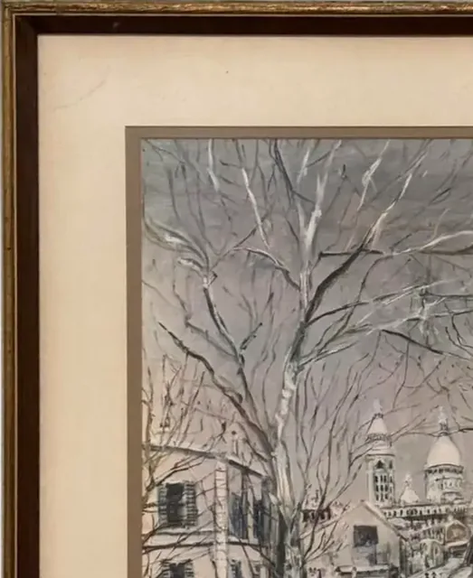
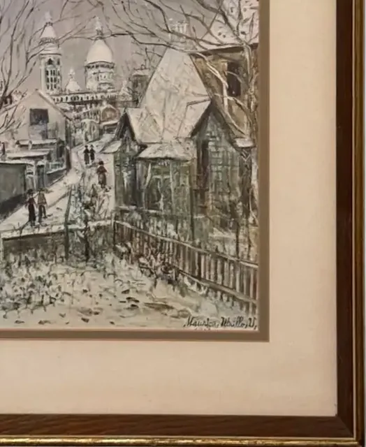
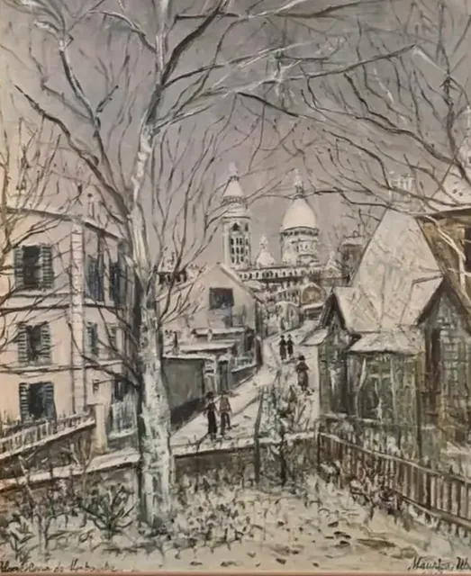
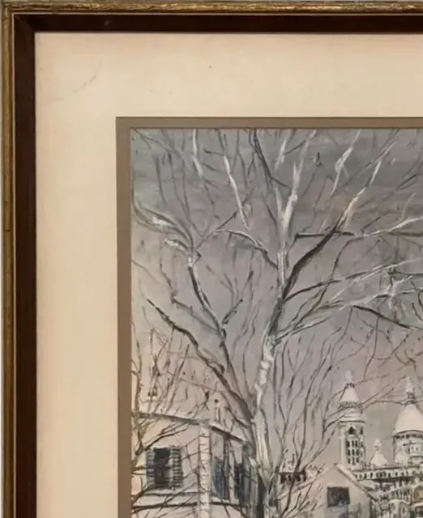

Paintings & Prints
Montmartre Winter Street Scene after Utrillo, Maurice Utrillo, V., Signed, Framed
After Maurice Utrillo · mid to late 20th century reproduction
Price Upon Request









About the Item
Maurice Utrillo, V.. A winter view up a Montmartre lane: a big bare tree and a tangle of branches fill the upper half, and through them the pale domes of Sacré-Coeur appear on the skyline. A white apartment block stands to the left, a gabled cottage with a green fence to the right, and a few dark figures walk the snow-covered street between them. The palette is almost monochrome - white, chalky grey, warm putty and black branch-lines - with tiny touches of green and red. Presented on a cream mat with a grey inner border in a dark wood frame with a gilt inner edge. Medium: colour reproduction print on canvas-textured paper, with facsimile signature. Signed lower right of the image, printed with the picture, reading "Maurice Utrillo, V.". Inscribed on the reverse or mount: Maurice Utrillo, V. (lower right of the image); An illegible handwritten title inscription at the lower left of the image. Condition: Mat toned and slightly foxed at the lower edge; the image itself appears clean.
Details
- Creator:
- After Maurice Utrillo
- Creation Year:
- mid to late 20th century reproduction
- Dimensions:
- Height: 23.5 in (59.69 cm)
Width: 19.25 in (48.9 cm)
outside of frame - Medium:
- colour reproduction print on canvas-textured paper, with facsimile signature
- Period:
- 20Th
- Condition:
- Offered in the condition shown in the photographs.
- Reference Number:
- VO-134
- Documentation:
- no certificate photographed
- Gallery Location:
- Maurice Utrillo, V. (lower right of the image); An illegible handwritten title inscription at the lower left of the image